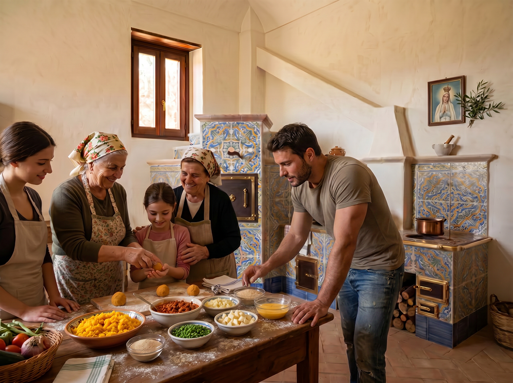
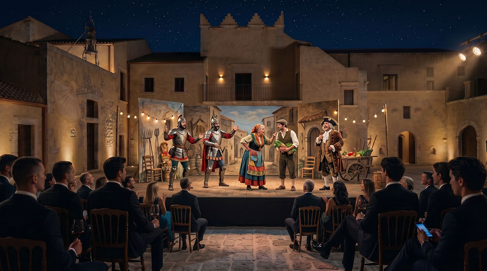
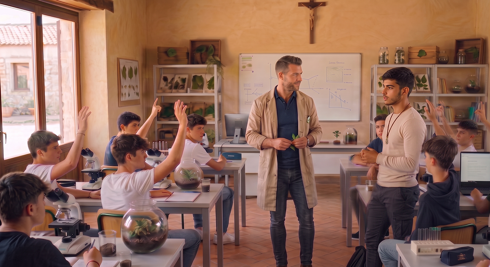
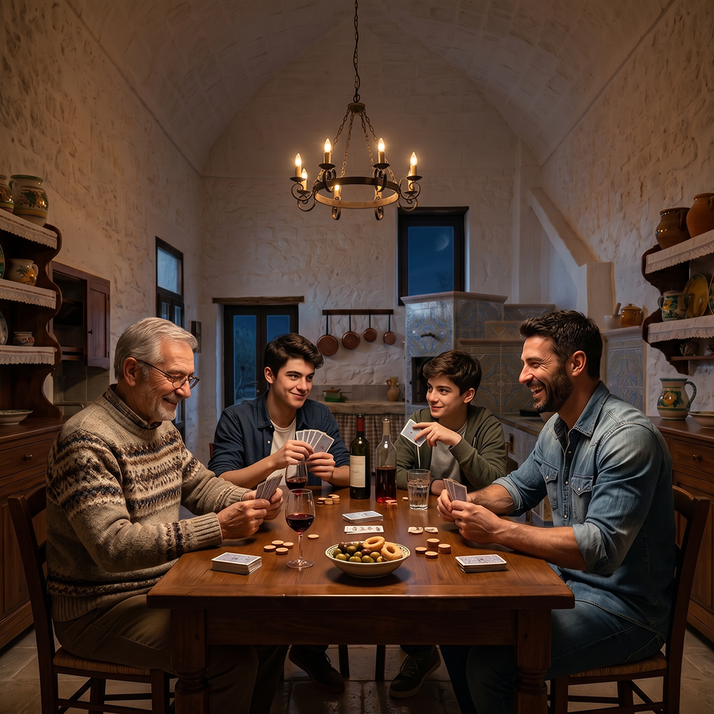

Living at Baglio San Michele means choosing a slower, more conscious rhythm, in which the care of relationships, contact with the land and the transmission of values between generations become an integral part of daily life. It is not an isolated life, but a balanced coexistence between family intimacy and community dimension.
The rhythm of daily life

Life at Baglio San Michele follows a rhythm marked by the times of the land and the care of relationships. Days begin early, with the sounds of the countryside and the scent of bread or coffee prepared at home. Many families choose to work remotely or dedicate themselves to artisanal and agricultural activities, alternating moments of individual commitment with time dedicated to their children and community life.
Meals play a central role. They are not only a moment of nourishment, but of encounter. Often people eat together in the courtyard or in common spaces, especially on weekends and summer evenings. Products from the vegetable garden, olive grove and neighboring farms naturally enter the kitchen of every family, favoring a simple, seasonal diet connected to the territory.
The management of spaces and community life

Each family unit has its own private residence, designed to guarantee intimacy and tranquility. At the same time, the Baglio offers shared spaces — such as the courtyard, the common kitchen, the chapel and green areas — that become places of natural encounter.
The care of common spaces is the responsibility of everyone. There is no “service staff”: it is the families themselves, according to shifts or agreements, who take care of ordinary maintenance, the preparation of some events and the daily management of shared environments. This model strengthens the sense of shared responsibility and reduces management costs.
Education and children’s growth

Children grow up in an environment where nature, intergenerational relationships and contact with manual work are part of daily life. There is no structured internal school, but an educational approach is favored that integrates formal learning with direct experience: the vegetable garden, animal care, participation in festivals and seasonal work, contact with artisans and farmers of the territory.
Families support each other in organizing activities for children and in mutual help during the busiest periods. The presence of elderly people and adults with different trades offers the youngest a rich context of stimuli and role models.
Work, trades and productive activities

Many residents work remotely, taking advantage of the available connectivity and spaces dedicated to study and individual work. Others dedicate themselves to activities related to the land, craftsmanship or the processing of local products.
The Baglio encourages the birth of small internal productive activities or in collaboration with companies in the territory (beekeeping, horticulture, food processing, craftsmanship). The goal is not profit maximization, but the creation of a mixed, dignified economy consistent with the rhythms of community life.
Decisions, rules and conflict management

Decisions concerning community life are made through structured moments of confrontation, in respect of the principles of subsidiarity and participation. There are clear rules, shared from the beginning, concerning the use of spaces, respect for silence, animal care and waste management.
When tensions or disagreements arise, direct dialogue is privileged and, when necessary, confrontation in the presence of internal mediation figures within the community. The goal is not to avoid conflicts, but to manage them in a mature and constructive way, as a natural part of living together.
Traditions, festivals and cultural transmission

The calendar of the year is marked by strong moments: the Feast of Saint Michael, celebrations linked to the harvest, Christmas, Easter and other occasions linked to Sicilian and Christian tradition. These occasions are not only social events, but moments in which the sense of belonging is renewed and the value of memory, faith and conviviality is transmitted to new generations.
Even daily gestures — the preparation of bread, the care of the vegetable garden, the blessing of the table — become occasions to transmit values and habits that would otherwise risk being lost.
Balance between privacy and community life

One of the most delicate aspects of life at the Baglio is the right balance between the need for family intimacy and the community dimension. It is not a life of continuous “communal living”, but a coexistence in which everyone can choose when to participate and when to withdraw into their own home.
Families who choose the Baglio are generally people who appreciate the relational dimension without giving up their own autonomy. Respect for the times and spaces of others is considered a fundamental value.
Do you recognize yourself in this way of living?
If you are looking for a place where you can raise your children with serenity, cultivate authentic relationships and live in harmony with the territory, Baglio San Michele could be the right place for you.